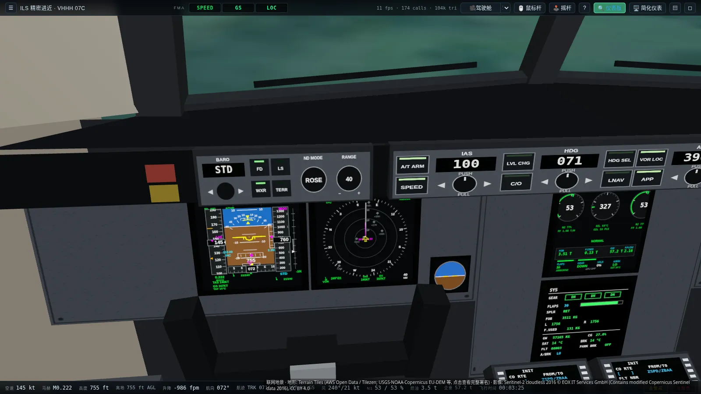
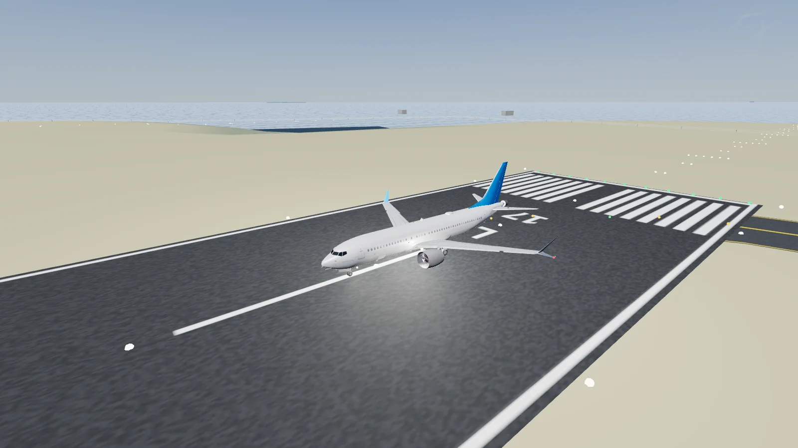

Portfolio · 2026
KEVIN YU
浏览器、飞行模拟器、网卡聚合助手 —— 每一个都由我独立开发。我只做自己真正想用的东西，让它简单、好用，并尊重你的设备和隐私。
↓ 看看作品
Portfolio · 2026
浏览器、飞行模拟器、网卡聚合助手 —— 每一个都由我独立开发。我只做自己真正想用的东西，让它简单、好用，并尊重你的设备和隐私。
↓ 看看作品
04 — About
我不是在做产品矩阵，只把自己每天要用的东西写出来。用完发现好用，就顺手放上来，不收钱。
东西都很小：一个浏览器、一个飞行模拟器、一个把多网卡叠起来的小工具。没有云端，没有账号，名单和数据都只留在你的机器上。

